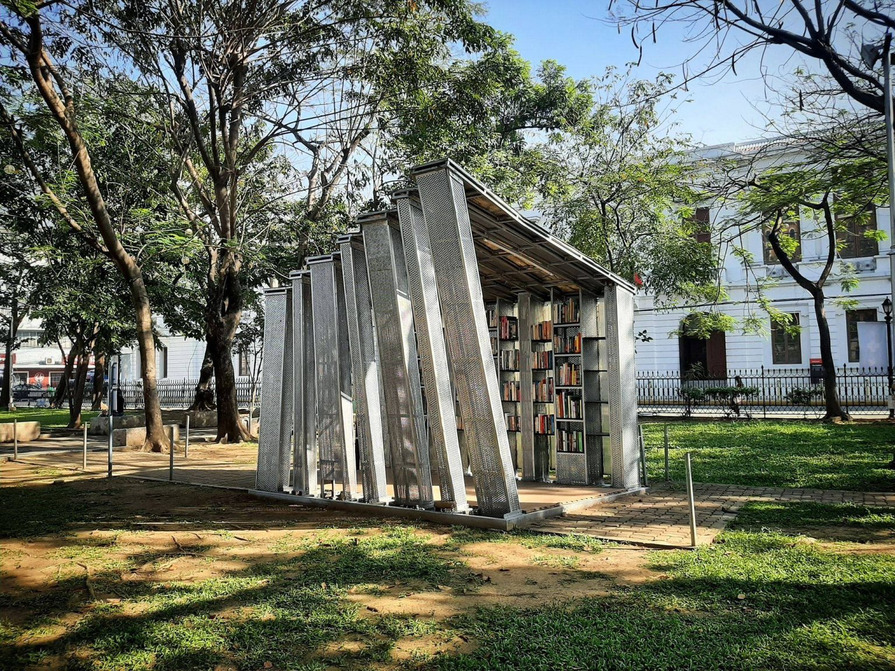
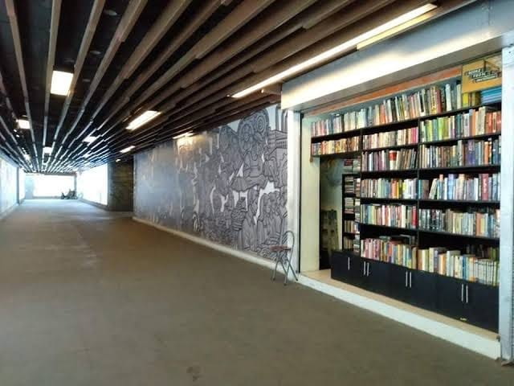
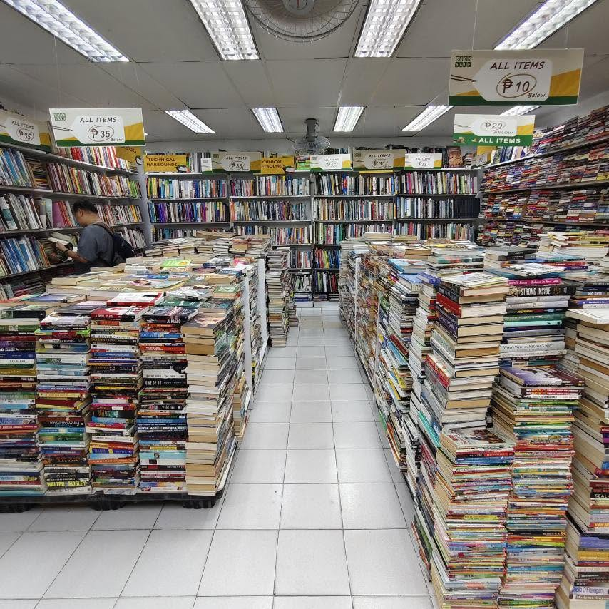

The Book Stop Project: A pop-up literary haven
Plaza Roma, Intramuros, Philippines
This is a book project in Intramuros wherein you can exchange, swap, take and leave books in this pop-up library.

This is a guide for you to find best Book Stores in Manila where you can find your favorite books.
Plaza Roma, Intramuros, Philippines
This is a book project in Intramuros wherein you can exchange, swap, take and leave books in this pop-up library.

Lagusnilad Underpass, Padre Burgos Avenue, Manila
This bookstore is located in a pedestrian underpass in Manila near Manila City Hall. They offer historical and academic books that students from nearby universities and schools could buy.

Booksale Pedro Gil Branch, 1602 Leon Guinto St., Manila
Booksale offers affordable books. They have academic, religious, fictional, and children's books. In this store, they have promos for as low as 10 pesos, so you can find your favorite books.
